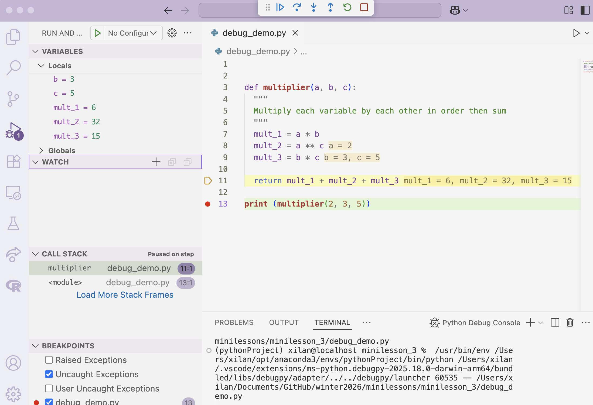

--------------------------------------------------------------------------- TypeError Traceback (most recent call last) <ipython-input-1-7c15da5d3ecb> in <module> 3 4 # This will cause the TypeError ----> 5 result = calculate_total(10, "twenty") 6 print(result) <ipython-input-1-7c15da5d3ecb> in calculate_total(value_1, value_2) 1 def calculate_total(value_1, value_2): ----> 2 return value_1 + value_2 3 4 # This will cause the TypeError 5 result = calculate_total(10, "twenty") TypeError: unsupported operand type(s) for +: 'int' and 'str'
Mini-Lesson 3: DeBugging
Alex Lan
Agenda
- Reading error messages
- De-Bugging Tips
- VS Code Debugger
- Appendix: Common Errors
Reading Error Messages
Traceback
- the sequence of function calls that led to the error.
- Start at the bottom: the last line usually gives the error type and description (e.g.,
TypeError: unsupported operand type) - The lines above show you the “call stack” - the path your code took to get to the error (which line, which function)
Example
Debugging Techniques
Use ChatGPT
- Copy the full error message (traceback) - don’t just copy the last line
- Include relevant code context - show the function or code block where the error occurs
- Be specific about what you’re trying to do.
- Understand what ChatGPT suggests before using it. ChatGPT can be wrong.
Example prompt structure: “I’m getting this Python error: [paste error]. I’m trying to [describe goal]. Here’s my code: [paste relevant code].”
Print Statements
- Use
print()to output variable states at different points in your code
53That’s wrong, we were expecting 6 + 10 + 15 = 21
Print Statements
mult_1 = 6
mult_2 = 32
mult_3 = 15
53Looks like our issue is in mult_2
VS Code Debugger
Debugging with VScode
Key elements in the debugger
- Breakpoint (red dot): where the debugging execution will pause
- Debug icon (left sidebar): Click to open the debug panel
- Yellow line: Shows the next line to execute
- Debug controls (top arrows):
- Step Over (arrow over dot): Execute current line
- Step Into (arrow down): Go into function calls
- Step Out (arrow up): Exit current function and continue
VS Code debugger: the workflow
- Set a breakpoint: click the left margin next to a line number
- Open Run and Debug: your code runs until it hits the breakpoint.
- Step through execution: use the top debug controls.
- Inspect state: check Variables / Watch / Call Stack
- Variables: everything in the current scope
- Watch: expressions you pin that update each time you step
- Call Stack: how you got here (which functions were called)
- Variables: everything in the current scope
Recap
- Read error messages (tracebacks)
- Start at the bottom line for the error type + message
- Debugging techniques
- Use ChatGPT effectively: paste the full traceback + relevant code + your goal
- Use print statements to check intermediate values
- VS Code debugger
- Set a breakpoint, Run and Debug, step through, inspect debug panel
Appendix: Common Python Errors
Syntax Error
- Missing closing parentheses, brackets, or quotes:
Indentation Error
- Indentation errors in loops or conditionals:
Logical Error: ‘and’ vs ‘&’ in element-wise comparisons:
--------------------------------------------------------------------------- ValueError Traceback (most recent call last) <ipython-input-7-9c42d3102bec> in <module> 1 df = pd.DataFrame({'A': [0, 1, 2], 'B': [5, 6, 7]}) 2 ----> 3 df[(df['A'] > 1) and (df['B'] > 2)] # Incorrect 4 df[(df['A'] > 1) & (df['B'] > 2)] # Correct ~/opt/anaconda3/lib/python3.8/site-packages/pandas/core/generic.py in __nonzero__(self) 1327 1328 def __nonzero__(self): -> 1329 raise ValueError( 1330 f"The truth value of a {type(self).__name__} is ambiguous. " 1331 "Use a.empty, a.bool(), a.item(), a.any() or a.all()." ValueError: The truth value of a Series is ambiguous. Use a.empty, a.bool(), a.item(), a.any() or a.all().
AttributeError
- Using a wrong method (
.average()on a DataFrame):
--------------------------------------------------------------------------- AttributeError Traceback (most recent call last) <ipython-input-8-b52adb53a114> in <module> ----> 1 df['A'].average() # Incorrect, should use df.mean() ~/opt/anaconda3/lib/python3.8/site-packages/pandas/core/generic.py in __getattr__(self, name) 5137 if self._info_axis._can_hold_identifiers_and_holds_name(name): 5138 return self[name] -> 5139 return object.__getattribute__(self, name) 5140 5141 def __setattr__(self, name: str, value) -> None: AttributeError: 'Series' object has no attribute 'average'
KeyError: access a column that doesn’t exist
--------------------------------------------------------------------------- KeyError Traceback (most recent call last) ~/opt/anaconda3/lib/python3.8/site-packages/pandas/core/indexes/base.py in get_loc(self, key, method, tolerance) 2894 try: -> 2895 return self._engine.get_loc(casted_key) 2896 except KeyError as err: pandas/_libs/index.pyx in pandas._libs.index.IndexEngine.get_loc() pandas/_libs/index.pyx in pandas._libs.index.IndexEngine.get_loc() pandas/_libs/hashtable_class_helper.pxi in pandas._libs.hashtable.PyObjectHashTable.get_item() pandas/_libs/hashtable_class_helper.pxi in pandas._libs.hashtable.PyObjectHashTable.get_item() KeyError: 'C' The above exception was the direct cause of the following exception: KeyError Traceback (most recent call last) <ipython-input-9-3ae91f975e46> in <module> ----> 1 df['C'] # KeyError, C is not in the DataFrame ~/opt/anaconda3/lib/python3.8/site-packages/pandas/core/frame.py in __getitem__(self, key) 2900 if self.columns.nlevels > 1: 2901 return self._getitem_multilevel(key) -> 2902 indexer = self.columns.get_loc(key) 2903 if is_integer(indexer): 2904 indexer = [indexer] ~/opt/anaconda3/lib/python3.8/site-packages/pandas/core/indexes/base.py in get_loc(self, key, method, tolerance) 2895 return self._engine.get_loc(casted_key) 2896 except KeyError as err: -> 2897 raise KeyError(key) from err 2898 2899 if tolerance is not None: KeyError: 'C'
Quarto Rendering Errors
- For Quarto you must check the terminal for error messages